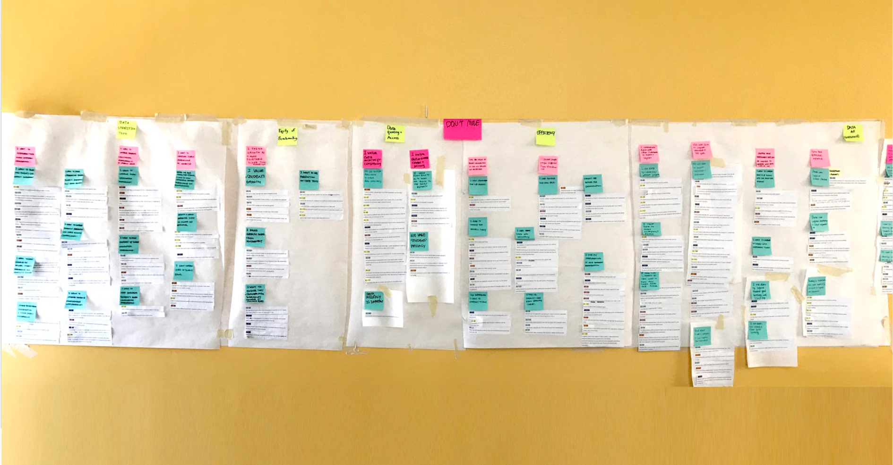

Our generative research, January to May 2019, consisted of literature review, competitive analysis, data-mining, structured interviews, and co-design sessions with data coordinators around the country. We aimed to identify data coordinators’ pain points, understand their data analysis process, and validate their needs for demographic comparison.
Research Questions
Our project focuses on how we might leverage student growth data provided by Renaissance to generate insights about demographic comparison and enable educators to make data-driven educational decisions. We have formed our research questions as follows, and used them to guide our research phase:
1. How do data coordinators communicate data to others and use data to inform educational decisions?
2. How might we allow educators to process and gain insights from data more efficiently?
3. How might demographic data comparison inform and influence educators’ decision-making process?
Research Methods

We used a vast number of research methods to explore the problem space. These explorations provided us with insights on data coordinators' behaviors, decision-making, and pain points through comparing students' growth and performance among different demographics, and helped lay the foundation for our design.
Literature Review
We reviewed literature broadly related to our topic in order to shed light on all of our research questions.
Competitive Analysis
We identified 11 competitive products and analyzed them on two dimensions: Dashboard Quality and Comparison Ability
Data Analysis
We performed linear regressions comparing growth scores against certain demographic variables, to validate findings from Literature Review.
Survey
We did a survey where participants checked which demographic aspects they want to see compared within given choices
Co-design Workshops
We conducted two co-design sessions with data coordinators to gauge their work process.

Interviews
We conducted 8 one-hour remote structured interviews with data coordinators to understand their data usage and their expectations regarding demographic based comparisons.
Affirnity Diagramming
We used affinity diagramming to consolidate our interpretations and see how opinions clustered.
Modeling
We developed a Cultural Model to articulate our findings and better inform how data coordinators currently use data in their work-flow
Literature Review
We reviewed literature broadly related to our topic in order to shed light on all of our research questions. Since we are interested in methodology of comparing students’ data and visualization we focused on literature regarding learning analytics methodologies.
Our review resulted in the following 4 findings.
1. Learning analytics findings need to be conveyed tactfully, not just through numbers.
2. Dashboards provide useful graphical representations to analyze and act on data.
3. When comparing learning outcomes, selecting the right demographic features has more influences than selecting comparison methodology.
4. Race, poverty levels, and English proficiency and other uncontrollable factors account for most variation in achievement.
Competitive Analysis
To gain an understanding for how data coordinators currently report data and how demographic comparison is currently done, we identified 11 competitive products and analyzed them on two dimensions: Dashboard Quality and Comparison Ability.
During competitive analysis, we found NWEA, iReady, Istation are most similar in function to Renaissance’s Star, in that they all have educational software and dashboards for learning analytics. We also found that Renaissance may benefit from looking at certain products more closely, for example, FastBridge has great user interface, Ed-Data does well in the interactive dashboard, ISBE Ed360 and Future Ready PA are government website that present state tests performance with school level demographic information.
Overall, these products vary in function and usability, but none of Renaissance’s major competitors provide demographic comparison as we define it. Future Ready PA from the State of Pennsylvania does provide excellent demographic comparison, but they base their scores on state test data. This creates an opportunity for Renaissance to provide more frequent data and create interventions before students take more high-stakes tests.
Modeling
To gain an understanding for how data coordinators currently report data and how demographic comparison is currently done, we identified 11 competitive products and analyzed them on two dimensions: Dashboard Quality and Comparison Ability.
After our main Findings were developed, we developed a Cultural Model to articulate our findings and better inform how data coordinators currently use data in their work-flow. More importantly, it reveals the value points, and motivations of different stakeholders. It helped us identify the breakdowns of the flow of information between different stakeholders, as well the opportunities we could target as intervention points to design a better product for Renaissance’s users.
The model helped us to better understand the stakeholders, their relationships, and their respective needs as a reference for our research. The key takeaways are the identified opportunities as follows:
- Comparing to other demographically similar schools
- Connecting to other schools, learn from what other schools are
doing
- Providing an easier way to help other educators understand data
- Providing manipulatable raw data
- Automatically generate good visuals
- Providing a better way to figure out which subgroup of students
needs help
- Providing data-driven suggestions on system level interventions
Interview and Synthesis
We conducted 8 one-hour remote structured interviews with Data Coordinators to understand their data usage and their expectations regarding demographic based comparisons.
All our interviewees serve as data coordinators in their school or districts and as such are in charge of analyzing student growth data and communicating with other educators to promote changes. All interviewees use Renaissance products as their main resource to collect and visualize data. Our interviewees were spread out across the country and serve schools of different size, type, and area (e.g. small/large, public/private, rural/urban).

We transcribed our interviews, and rotated interpretation between group members in order to avoid bias. Then we used affinity diagramming to consolidate our interpretations and see how opinions clustered. The affinity diagram generated lots of insights, which we have consolidated into seven main findings. These findings informed our co-design sessions design, survey design and model building.
Co-design Workshops
We conducted two co-design sessions with data coordinators to
understand:
1. What information they would need given a certain scenario of
analyzing or presenting data.
2. Their preferred way of visualizing the information in the given
scenario.
3. How they would use this information and communicate the data
with others.
Our methods included card sorting and role-playing. Participants were asked to choose scenarios they are interested in, and then sort out cards with information they needed. With this information, they were prompted to describe or draw the visuals they wanted to use for communication. At last, they role-played with the interviewer to show how they would communicate the information with other educators in their school, using data as a reference.
Early Research Insights

Data Coordinators want to compare along different demographic lines:
- Ethnicity
- Gender
- English Language Learner
- Free/Reduced Lunch
- School Size
- School Type
- School Location
"Race, poverty levels, English proficiency and other uncontrollable factors account for most variation in achievement."

Data Coordinators would like to know how their school is doing compared to schools with similar demographic characteristics
- National rankings fails to address factors that contribute to schools’ overall performance
- Want a contextualized approach to school improvement based on what works for similar schools
"Sometimes with similar demographic information, when you don’t put everyone in the same pot, it’s easier to see, ‘Am I progressing the same rate as peers who have similar characteristics?"
Data Coordinators would like students to be on-track, looking across sub-groups or time
- Want to ensure all students grow
- Want to make sure all sub-groups are receiving the support they need
- Want to see longitudinal data for students at varying levels
It is important to keep track for accountability and closing the gaps between groups

Data Coordinators have difficulty communicating data with teachers and administrators because there is little shared understanding of data interpretation
- Not everyone is a data coordinator. Teachers and school leaders usually prefer visuals to raw numbers
- Understanding how SGP, SS, and NCE relate to student achievement takes time, and teachers are busy
- Want to show different people different data, raw data can be overwhelming
a lot of times teachers don’t really understand that data piece

Data Coordinators are open to, but lack convenient ways to find and connect with similar schools
- Some connect to other schools through personal networks
- Some take the time to research and reach out to similar schools
- Renaissance Royals provides connection, but not to similar schools
I think being able to find another district that has a similar population of special ed students and what they’re doing is successful, then we wouldn’t have to recreate the wheel, we wouldn’t have to, we could just see what they’re doing and do what they’re doing

Data Coordinators don’t have a smooth way of creating reports
- Want data they can manipulate. For example: raw data as csv, not in PDF reports
- Want flexibility in data representation
- Want simpler report generating process
It takes a lot of work and time to get the information i need on my side

Data Coordinators want to use data to better inform educational decision-making
- Want to use demographic information to target students more accurately
- Use performance data to better identify students in need
- Design or import better curriculum based on data
There are some things that we just have no control over and their poverty is one of them, but we do have control over how we teach them